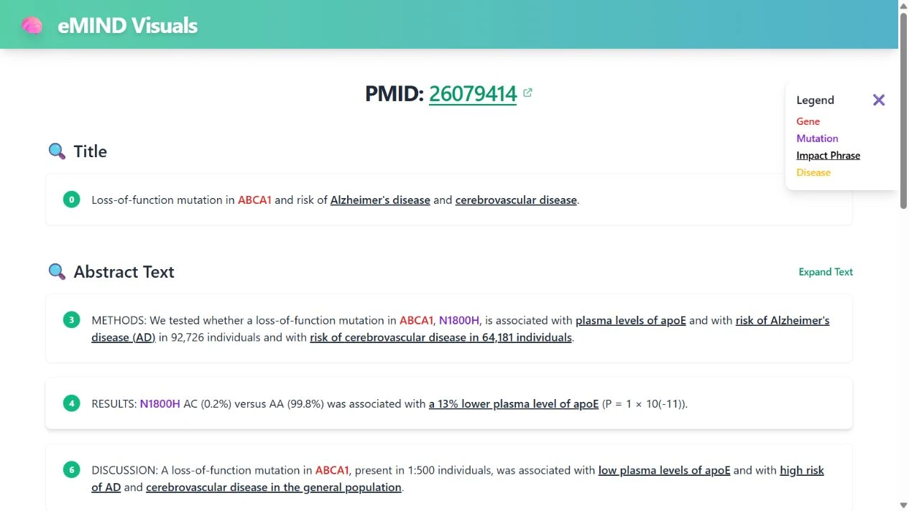
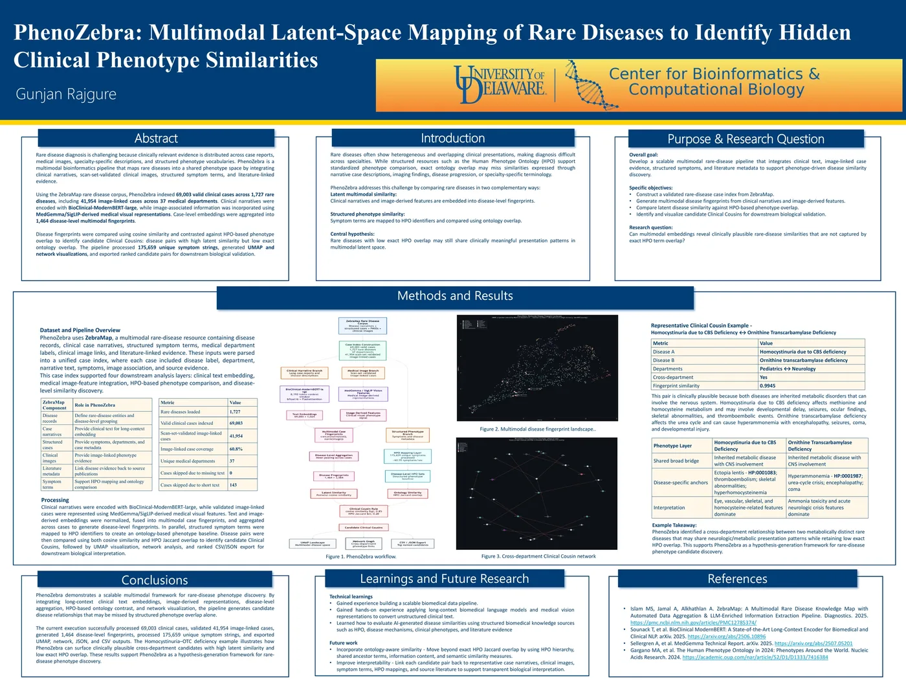

biomedical evidence portal
Open to AI/ML engineering and research roles
Deployed biomedical AI / LLM infrastructure / multimodal research
Gunjan
Rajgure.
I turn model capability into measurable systems. AI/ML engineer and biomedical researcher connecting rigorous evaluation, scalable software, and evidence-grounded products used by real researchers.
Currently
Research Assistant University of Delaware M.S. Bioinformatics & Data Science Completed May 2026eMIND relation precision
clinical cases indexed
LLM serving throughput
The throughline
Research depth.
Engineering discipline.
Three years in enterprise systems taught me to ship maintainable software, lead teams, and translate ambiguous requirements. Graduate research added multimodal learning, biomedical NLP, GPU inference, and scientific rigor. The result is work that can be deployed, inspected, measured, and trusted.
Experience / 2021 - present
Built in production.
Sharpened in research.
02
Research Assistant
University of Delaware
Building multimodal representation-learning and biomedical NLP systems that connect clinical narratives, medical images, ontologies, and literature evidence.
- Architected PhenoZebra across 69,003 cases, 1,727 rare diseases, and 37 medical departments.
- Optimized A100 80GB inference with bfloat16, batching, reusable caches, and checkpoint recovery.
- Scaled eMIND into an evidence-linked variant-impact workflow and deployed search portal at approximately 0.94 precision and 0.84 recall.
- Built reproducible JSONL and PMC pipelines with normalization, deduplication, routing, and monitoring.
01
Systems Engineer
Tata Consultancy Services
Delivered NLP, machine-learning, automation, API, and full-stack systems for enterprise clients while leading cross-functional engineering work.
- Led an eight-member team delivering NLP classification across 100,000+ records at 95% accuracy.
- Designed and maintained enterprise applications and 50+ REST APIs secured with Keycloak.
- Automated model evaluation and reporting in Python, reducing manual effort by 60%.
- Translated client requirements into technical designs, documented releases, and production support.
Deployed & presented research
Research you can inspect.
Two biomedical AI systems built around the same principle: model outputs become more useful when people can trace them back to evidence, assumptions, and measurable behavior.

Launch live application
Live deployment
ISMB 2026 / Washington, DC
eMIND Visuals
Product outcome
Turn dense Alzheimer's disease literature into searchable, evidence-linked genetic variant impact records.
~0.94relation precision
~0.84relation recall
4search entry points
Liveresearch portal
The workflow collects article evidence, extracts mutation-impact relationships, classifies effect types, normalizes genes, variants, diseases, and ontology terms, then carries every assertion into the interface with its PMID and source sentence. Researchers can search by gene, mutation, UniProt accession, or PubMed ID and inspect highlighted evidence alongside structured results.
- BERT
- Biomedical NLP
- Relation extraction
- Entity normalization
- UniProt
- DOID
- Evidence UI

Open research poster
Multimodal research
University of Delaware
PhenoZebra
Research question
Can multimodal embeddings reveal clinically plausible rare-disease similarities that exact HPO overlap misses?
69,003case embeddings
41,954image-linked cases
1,464disease fingerprints
711,264candidate relationships
BioClinical-ModernBERT encodes long clinical narratives; MedGemma/SigLIP supplies visual representations; HPO-based Jaccard constraints provide a structured comparison layer; UMAP and NetworkX make the candidate space inspectable.
- PyTorch
- BioClinical-ModernBERT
- MedGemma
- SigLIP
- HPO
- UMAP
- NetworkX
Completed systems / measured against baselines
AI that can be evaluated.
These projects go beyond architecture diagrams. Each includes a reproducible workload, explicit baseline, operational controls, and measured outcomes.
01 / LLM infrastructure
Intelligent Distributed LLM Serving
Kubernetes-based inference across eight GPU workers with load-aware routing, continuous batching, prefix-aware KV-cache reuse, admission control, and failure recovery.
2.4xthroughput
-46%p95 TTFT
99.9%failure-test availability
-31%cost / 1K tokens
- Python
- vLLM
- FastAPI
- Kubernetes
- Prometheus
- Grafana
02 / Agent reliability
Evaluation-First Agent & RAG Platform
Multi-tenant agentic RAG with hybrid retrieval, tool execution, memory, role-based permissions, sandboxing, human approval, and uncertainty-aware control.
250evaluation tasks
91%grounded accuracy
-63%unsupported claims
-92%unsafe tool actions
- LangGraph
- FastAPI
- PostgreSQL
- Qdrant
- OpenTelemetry
- MLflow
03 / Safety-critical AI
Safe Clinical Workflow Agent
Medication-reconciliation support across synthetic FHIR records with identity validation, evidence citation, uncertainty scoring, approval gates, and immutable audit replay.
5,000synthetic records
94%workflow completion
96%evidence grounding
100%wrong-patient blocks
- FHIR / HL7
- HAPI FHIR
- RAG
- PostgreSQL
- Docker
- OpenTelemetry
Selected breadth
From inference to inference.
The first kind runs models. The second kind tests what the evidence supports.
Data Science Research Case Studies
Causal inference, CUPED experimentation, survival analysis, forecasting, empirical Bayes, fraud detection, fairness auditing, NLP, spatial statistics, and uplift modeling with documented estimands, uncertainty, diagnostics, and limitations.
Explore repositoryMachine Learning Inference Collection
Classification, regression, forecasting, anomaly detection, sentiment, recommendations, and implementations of KNN, linear regression, and K-means from scratch with reusable prediction interfaces.
Explore repositoryAdditional research
Tissue-specific gene expression
Single-cell RNA-seq deep clustering
Vehicle tracking & license-plate recognition
PubMed evidence pipelines
About / education / toolkit
Broad enough to connect.
Deep enough to build.
I move comfortably between research questions, model behavior, backend architecture, data pipelines, and the operational details that make a system usable.
Education
M.S. Bioinformatics and Data Science
University of Delaware / 2024 - 2026
B.Tech. Computer Science and Engineering
DKTE's Textile and Engineering Institute / 2017 - 2021
Core toolkit
Model
PyTorch, TensorFlow, Transformers, BERT, multimodal learning, RAG, LangGraph
Build
Python, FastAPI, Django, Java, SQL, REST APIs, PostgreSQL, MongoDB, Redis
Operate
Docker, Kubernetes, CUDA, A100, Prometheus, Grafana, OpenTelemetry, MLflow
Research
Biomedical NLP, FHIR/HL7, HPO, RNA-seq, causal inference, survival analysis, fairness